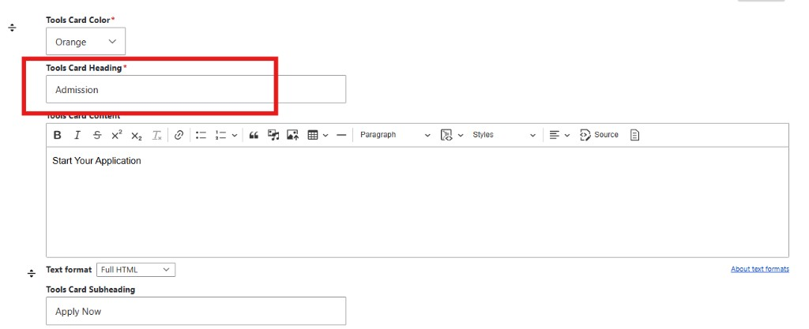
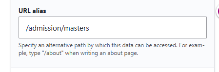
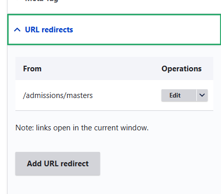
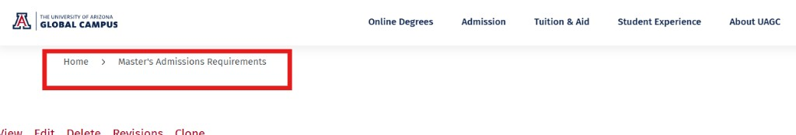
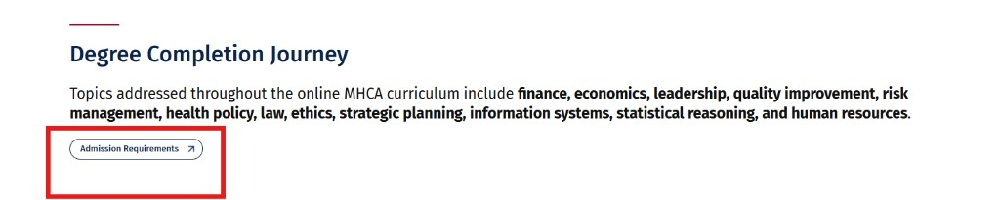

Admissions → Admission Replacement
Use this visual aid to update occurrences of “Admissions” to “Admission” across UAGC pages, including paragraph blocks (Tools Card, Completion Journey, Tools Section, Image Card Layout) and URL paths/redirects.
Step-by-step process
Start by identifying which paragraph types/blocks contain the content you need to edit. Then follow the steps below in order.
-
1Export affected URLs with the Paragraphs report module
Use the Paragraphs report module to export a spreadsheet of URLs that contain your target paragraph types (Tools Card, Completion Journey, Tools Section, Image Card Layout).
TipExport one paragraph type at a time. Then merge the exports into a single “work list” so you can track which pages you’ve fully reviewed. -
2Review each URL and update every paragraph type on the page
For each exported URL, review all paragraph types on that page and update each one (for example: change “Admissions” → “Admission” in headings, buttons, and card labels).
Example: tools section label that may need “Admissions” → “Admission”. 
Example: Tools Card Heading field where you update the text. Quick checkSearch the edit form for Admissions before saving to catch hidden labels (CTA text, link titles, image card headings, etc.). -
3Update the URL alias (if the content type uses one)
If the page uses a URL alias, change the path from
/admissions/<level>to/admission/<level>(example:/admissions/masters→/admission/masters).
Example: updating the URL alias path. -
4Confirm (and update) URL redirects for the page
Update the URL redirect so the old path forwards to the new one:
/admissions/<level>→/admission/<level>. Do this for each degree level: Associate, Bachelor’s, Master’s, Doctoral, International.
Example: updating a URL redirect from the old path. -
5Change the page title for the content type
Update the title from “Master’s Admissions Requirements” to “Master’s Admission Requirements” (and similarly for each degree level).

Example: page title/breadcrumb where “Admissions” appears. -
6Add extra redirects for other inbound links (blogs, etc.)
Add additional redirects to catch other inbound URLs that point to the old path (example: a blog linking to
https://www.uagc.edu/admissions/masters).Where to lookUse site search, analytics, or backlink tools to discover old URLs still in use. Add redirects for the variants you find.
Example: CTA buttons must also use “Admission” wording consistently.
Checklists
- Open the page edit form in Drupal.
- Review every paragraph type on the page (not just one).
- Change all visible labels: headings, subheadings, CTA text, button labels.
- Update internal links and link titles that contain “Admissions”.
- Save, then verify on the published page (front-end).
- Update the URL alias to
/admission/<level>(if used). -
Ensure redirect exists:
/admissions/<level>→/admission/<level>. - Update title: “<Level> Admissions …” → “<Level> Admission …”.
- Confirm nav links for all five degree levels remain correct.
- Spot-check key CTAs (cards, buttons, completion journey links).
Helpful links
These are general references. If you have internal UAGC documentation for the exact Drupal setup (Paragraphs report module, export steps, redirect workflows), add it here too.